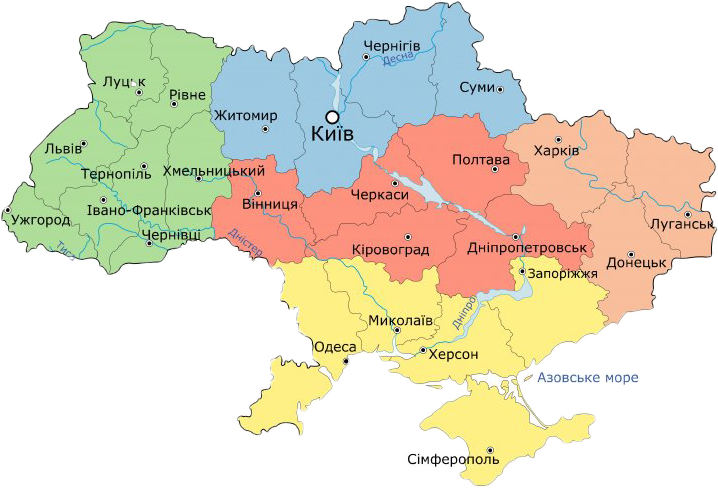

Україна


Україна — держава, розташована у Східній Європі, охоплює південний захід Східноєвропейської
рівнини, частину Східних Карпат і Кримські гори. Межує з Румунією і Молдовою на південному заході, з
Угорщиною, Словаччиною та Польщею на заході, з Білоруссю на півночі та з Росією на сході й північному
сході. На півдні омивається Чорним та Азовським морями. Площа становить 603 700 км². Найбільша за
площею країна серед повністю розташованих у Європі.